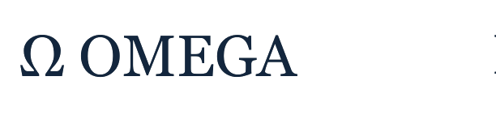
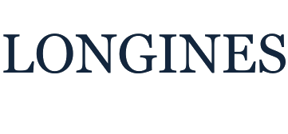
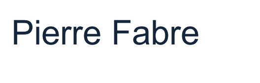
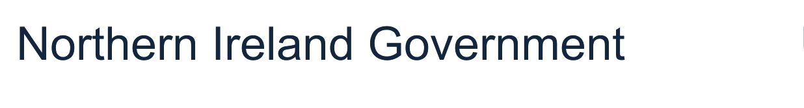

AI consulting
a fresh wind for your workday.
I help Swiss self-employed and SMEs reduce admin overhead with simple AI tools. Clear guidance, working solutions — no hype, no IT project.
OUR APPROACH
It isn't about artificial urgency.
It's about making daily work lighter.
WHERE AI HELPS
Practical support.
where it counts.
No big transformation project. We start slowly with the daily tasks that quietly eat your time.
Emails & documents
Draft client replies, reports and standard documents in a fraction of the time — and keep your own voice in every line.
02Client conversations
Prepare calls, gather background and turn conversations into clear next steps.
03Data & analysis
Turn messy spreadsheets and notes into clear summaries and insights.
04Connected routines
Connect your tools so routine hand-offs run themselves.
TWO WAYS TO START
Pick the option
that fits your week.
Both are unhurried. No obligation, no pressure — just a clear next step that works for you.
Option 1: an unhurried call
A free 30-minute chat about your daily work and where AI could take some weight off — without obligation, in your own time.
Book a Call →Option 2: your AI agent
Your own smart assistant that takes work off your plate around the clock — private, securely configured, sandboxed and connected for you, then used effortlessly from your phone or desktop.
Set it up with me → How to build AI agents? Read the guide →HOW WE WORK
Step by step,
at your pace.
Getting to know you
We start with an unhurried conversation about where your time actually goes.
Preparation
I analyse the friction points and, where helpful, talk briefly with your team.
Implementation & training
We set up the right tools together and train your team without pressure.

ABOUT ME
Down-to-earth.
Hands-on.
For over ten years I led customer teams and made their day-to-day work lighter — at companies like Hotjar and Platform.sh. What always mattered to me: getting more done without burning people out.
Along the way I noticed a gap: big corporations have whole AI departments, while self-employed and Swiss SMEs are left with buzzwords and platitudes. So I do things differently — practical AI that actually works for you, explained simply and applied step by step.
QUICK FACTS
- 🇨🇭 Grew up in Wünnewil-Flamatt, Fribourg — a village with more cows than people.
- 🇪🇸 Lives in Corralejo, Fuerteventura.
- 🎖️ Swiss Army Captain — deployed to Kosovo on a peace-support mission, then commanded a Swiss signals company for four years.
- 🗣️ Fluent DE/FR/EN · basic ES/IT/PT · collects watches · walks & cooks. (No olives, no beer.)
- 🌍 Lived in 8 countries across 3 continents — Switzerland, Kosovo, Brazil, Colombia, Malta, Spain…
- 🥾 Once walked 101 km in 18 hours during Swiss Army officer training.
- 🎓 Bachelor's degree in Business Administration · Accounting & Economics.
NOTABLE CLIENTS






GET IN TOUCH
Let's talk about your workday.
30 minutes. No sales pressure. Just a quiet chat about where AI could take some weight off your shoulders.